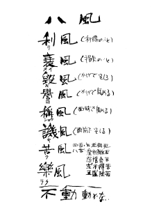

八風工房（はっぷうこうぼう）とは
工房名の意味
「平成十五年五月、私は身体障害者のための陶芸教室 八風工房（はっぷうこうぼう）を発足しました。八風工房の「八風」とは、何事にも動ぜず、自分を信じて生きること「八風吹不動（八風吹ケドモ動ゼズ）」という中国の寒山詩より選びました。」（小柴仁人著『失明と共に生きる』2005年大活字より引用） 
「八風」とはこの世を吹く八つのかぜ
利風（りふう）利得のこと
衰風（すいふう）損失のこと
毀風（きふう）かげでそしる
譽風（よふう）かげでほめる
稱風（しょうふう）面前でほめる
譏風（きふう）面前でそしる
苦風（くふう）四苦八苦・生老病死・愛別離苦
楽風（らくふう）怨憎会苦・求不得苦・五盛陰苦
この世には八つの風が吹いている。しかしそれらに動ぜず生きること、八風吹不動（八風吹ケドモ動ゼズ）。
{kind=link}
講師プロフィール
小柴 仁人（こしば まさと）
広島生まれの東京育ち。
堆肥を混ぜ、パンを作り、聖歌隊で歌い、芸大を目指して組曲「展覧会の絵」を弾きまくった高校時代。
慶應義塾大学では名門「山岸ゼミ」にて社会学を学び、障害者のコミュニケーション、特に視覚障害者とバリアフリーをフランスの哲学者メルロ・ポンティーのパースペクティブに基づき展開する。
その後、帰省し世界各国を回りながらも、母の願いを果たすため地元の短大で陶芸を学び、障害者のための陶芸教室「八風工房」を開く。
また、プロアーティストの依頼でホームページ制作やカメラマンとしても活躍中。
著書に『失明と共に生きるー視覚障害者の母とケアパートナーの私』他。
講師 英語ホームページ(English here)
講師 Twitter
芸術にもバリアフリー
障害者のための陶芸教室を開く 小柴仁人さん（2004年3月22日中国新聞朝刊より）
「きっかけは、目の見えない母が通える陶芸教室をつくりたかったから」。心身障害者のための陶芸教室「八風工房」で力を込めて土を練る。右手だけで土をひねる男性や足で作品を作る女性。六人の受講生に「先生」と呼ばれるたびに手助けに走る。
幼いころ母親が病気で失明。歩行に洗濯、母親を手助けしながら育つうちに、自然に福祉に関心を持った。大学では社会学を専攻し、バリアフリーをテーマに街で実地調査を重ねた。卒業してある日、陶芸をやりたい母が通うことが出来る障害者のための教室が満員と知った。
「障害者が街へ出て行く場が少ない。いろんな文化教室がもっとあったらいい」。絵画教室にとけ込めずに悩んでいる障害者の知人の存在も背中を押した。教えるにはまず自分が基本を身につけようと、比治山大で陶芸を一年学んだ。
昨年５月に広島市東区光町の市心身障害者福祉センターに開講。教室名は、「何事にも動揺するな」という意味の言葉「八風吹けども動ぜず」にちなむ。「下手」「障害者なのに上手」という評価を気にせず、制作に没頭してほしいという願いを込めた。授業料も材料費も取らない。引きこもりがちな障害者に参加してほしいと思うからだ。
視覚障害の生徒が作った「手に当たっても倒れない湯のみ」に、半身まひの生徒が作った「中身がこぼれにくいカレー皿」・・・。「こんなものがあったら」という思いが詰まった作品を見て、障害者が必要としているものに社会が気付いてくれたらと願う。
思いのままに作ったオブジェが「障害者の」作品ではなくただの一作品として見られる日が来ることを目指す。
「でも、とにかく、今一番うれしいのは、教室に参加した母が喜んでくれていること」。陶芸の楽しさ、バリアフリーの実現について熱く語っていた青年がその瞬間、親思いの息子の顔で笑った。（治徳貴子）
「きらり」（2005年6月29日読売新聞中国版より）
母の失明が私を動かしました。何かをしようという気持ちがあっても、障害を理由に断られることが、実は多いんです。そんな姿をみて、私に出来ることを考えて陶芸教室「八風工房」を開設、３年以上が過ぎました。本人の作りたいものを、和気あいあいと作れるようにしています。作品に笑顔を見せてくれたとき、本当にうれしいです。（野崎文香）
趣旨
八風工房（はっぷうこうぼう）設立の趣旨
自分の個性・才能を自由に発揮できる場所
障害者、特に中途障害者（後天的に障害を持った方）は、障害を持つ前の生活と障害を持った後の生活、それらの生活環境のギャップから消極的な思考傾向に傾きやすい。外出や一般教養講座、文化行事等への参加は敬遠されやすい現状があることは否定できない。これはなにも中途障害者に限らず、障害のある人達全体に言える。
そのような状況下で障害のある人一人一人に「自分の個性・才能を自由に発揮できる場所」と「楽しく気軽に高度なアートセンスを磨ける場所」を提供すべく八風工房（はっぷうこうぼう）を、広島県下の障害者施設内に設立する。現在は主に「陶芸」を障害のある方及びその介護者にご指導している。将来は、音楽、染め物、生け花、織物などに指導内容を拡張しようと考えている。
八風工房参加可能者は、身体障害者で身体障害者手帳をお持ちの方全て。及び介護・サポーター・ヘルパーをされるボランティア等の方。
参加費は、障害のある方は原則無料（高度なアートをされる場合は一部実費）。介護・サポーター・ヘルパーをされるボランティアの方は材料費実費。教室はフリータイム制で隔週火曜日の１６時から１９時半まで。広島市心身障害者福祉センター３階の趣味創作室にて。